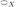

Note
Table of Contents
- 1. supplements
- 1.1. directed sets
- 1.2. logic complexity, first order
- 1.3. arithmetic RR
- 1.4. PA
- 1.5. satisfiable
- 1.6. there is an assignment makes it true
- 1.7. ground terms
- 1.8. ground instances
- 1.9. alternative explain for Herbrand's theorem
- 1.10. simultaneous substitution
- 1.11. unifier
- 1.12. most general unifier
- 1.13. unification algorithm
- 1.14. herbrand's theorem and cut-elimination
- 1.15. operational semantics and dynamics
- 1.16. Logic Programming
- 1.17. sigma type and Martin-Lof type theory
- 1.18. tensor product according to Bourbaki.
- 1.19. quotient universal property
- 1.20. pattern matching and higher order unification
- 1.21. topology
- 1.22. intuitionistic property and herbrand's theorem
- 1.23. functional dependencies
- 1.24. CoC and Coq and Martin-Lof's system
- 1.25. CIC
- 1.26. MLCC Martin-Lof's Constructive Type Theory
- 1.27. MLCC and universe
- 1.28. Russell universe and tarski universe
- 1.29. existential type
- 1.30. substructural logic
- 1.31. refinement type
- 2. Topic: coherent space and linearity
- 2.1. Scott Domain using logic
- 2.2. The definition of coherent space: web and coherence
- 2.3. Stable Functions: Definition
- 2.4. Stable Functions: A categorical intuition
- 2.5. Coherent Space: A relation with topological space
- 2.6. Coherent Space: Minimal Approximant and Coding of Stable Function
- 2.7. Stable Functions: Skeleton and Trace
- 2.8. Stable Functions: Skeleton and Berry Order
- 2.9. Coherent Space: Of CC and CCC
- 2.10. Coherent Space: Direct Product
- 2.11. Coherent Space: the well-definedness of direct product
- 2.12. Coherent Space: As a CCC
- 2.13. Stable Functions: Representation Theorem of Sk
- 2.14. Linearity: The Easy Definition
- 2.15. Linearity: Linear implication
- 2.16. Linearity: The Symmetry Provided by Linear Implication
- 2.17. Linearity: Linearisation or Of Course!
- 2.18. Linearity: Why Not?
- 3. Topic: pl
1. supplements
1.1. directed sets
A collection of sets is said to be directed, if the sets are indexed by a partially ordered set.
For example , , where is a partial order set.
1.2. logic complexity, first order
Logic complexity is about something like first order, second order; about the logic hierarchy, logic classification.
1.2.1. unbound quantifiers
Unbound quantifiers refer to quantifiers whose domain is not specified. But I think we can understand it as quantifiers whose domain is unbound, which is infinite.
1.2.2. prenex
prenex form is of form where is quantifier free. prenex is not that useful.
1.2.3. and
The sb of the above notations is about the alternation of unbound quantifiers. I don't really know what is an unbound quantifiers. But zero alternation means no quantifier.
One alternation means the quantifiers are the same. For , the quantifer can only be , and for . Thus all formulas in and are respectively of form: where is -free. So you know alternation means something like
1.2.4. sets
Here we understand as a collection of sets. A set is a set that satify: where is a -free quantifier and can not be arbitrary.
1.2.5.
and sets are respectively semi-decidable and co-semi-decidable.
semi-decidable means is decidable if . co-semi-decidable means is decidable if .
So a set is decidable, since .
1.2.6. a classic example of set
(given by Copilot)
Sure! A classic example of a set is the set of even numbers.
- The set of even numbers can be defined by the formula: . This shows that the set of even numbers is in .
- The set of even numbers can also be defined by the formula: . This shows that the set of even numbers is in
 .
.
Since the set of even numbers can be characterized by both an existential and a universal quantifier, it is in the intersection of and , making it a set.
1.3. arithmetic RR
RR is the child of formalism. And we introduce and some constant .
Arithmetic system right now is boring because it is merely formalism shit.
1.3.1. group: equality
There rules are used to prove .
1.3.2. group: definitions
These can prove that if two terms are the same number, then is provable.
the 3rd and 4th peano axioms

These group can be used to prove that if are different number, then is provable. Also, these two things shamelessly assume an infinite domain, otherwise could be proved.
1.3.3. group three: a last axiom
what is this one used for? Let us check what Girard says:
the last axiom of a slightly different nature from the rest, since it is not needed for incompleteness: the representation of expansive properties is handled by the definition axioms. It is used in the representation of recursive functions and therefore in the algorithmic undecidability of RR and all its consistent extensions. It is also used in the Rosser variant.
1.4. PA
1.4.1. induction schema
Let us check how to express induction schema: here second order peano arithmetic, we have relative description for induction schema, where we have that if is a nat number, then is provable.
1.4.2. the definition of PA
Peano's Arithmetic is derived from  , added with induction schema.
Here is not arbitrary.
, added with induction schema.
Here is not arbitrary.
1.5. satisfiable
A formula is satisfiable if there is an assignment that makes it true.
An assignment for a formula is a set of assignments (the process of give value, some people use validate) for variables in the formula. After giving value to variables, we can now decide the true/false of the formula (by writing down the truth table).
A (propositional) formula is unsatisfiable means that there is no way for it to be true.
Remark: The definition of satisfiable can be extended to predicate logic, where instead of assignment, we say model. I just don't remember the terminology.
1.6. there is an assignment makes it true
There is an entry in truth table that is true.
1.7. ground terms
Ground terms are terms that have no variable.
1.8. ground instances
A ground instance of a formula is a formula derived from , where all the variables are replaced with ground terms.
1.9. alternative explain for Herbrand's theorem
An formula has a Herbrand's model means that there are a set of ground terms that makes true.
1.10. simultaneous substitution
A can be applied to a formula or expression , but anyway I prefer for a formula, for a set of formulas.
means carry the substitution to every formulas in . We can compose those . For example, means carrying first and then .
1.11. unifier
A unifer for a set of expressions , is such , that
1.12. most general unifier
The most general unifier, a.k.a., m.g.u. is like the smallest unifier. A m.g.u. noted as , suit that which is a unifier, there is a such that
1.13. unification algorithm
unification algorithm is an effective algorithm used for search m.g.u.
Using the algorithm, we will find a mgu satisfies that for all unifier holds.
1.14. herbrand's theorem and cut-elimination
Herbrand’s Theorem: This theorem provides a way to transform a first-order logic formula into a purely propositional form.
It states that if a first-order formula is universally valid, then there is a finite set of ground instances (instances with no variables) of its clauses that are propositionally valid.
How they are related is that they both transfer something undecidable to decidable.
1.15. operational semantics and dynamics
Harper: Dynamics Others: operational semantics Me: reduction rules and normalization
1.16. Logic Programming
Logic programming is based on the idea of seeking the atomic theorems of a theory whose axioms are Horn clauses. Those are sequents of the form hwere are atomic. To each axiom one cannaturally associate introduction rules:
where is a subsitution. One easily shows:
- cut-elimination (immediate, there is no -elimination).
- For formulas of the shape , atomic, classical provability matches intuitionistic provability.
Thus the follwoing idea: in such an axiomatic system, try to prove formulas of the form . A cut-free proof will provide one with explicti values (existence property). The search for cut-free proofs is done by means of an algorithm, the resolution method, based on unification.
4.D.2 PROLOG, its grandeur. The idea is to consider a Horn theory as a program. one will make queries of the form « find the solutions to the conjunction », which amounts to finding proofs of , indeed cut-free. The search is done by unification: one seeks to prove by finding a clause (axiom written as a sequent) whose head (right formula) unifies with , by means of ; then one is led back to similar problems for the formulas of the tail where has been performed. One stops in case one steps on empty tails (success); on the other hand, when no unifier can be found, this is failure. But by far the most likely possibility is that of a search that neither succeeds nor fails, since it does not terminate. The culture of incompleteness is here to inform us as to the pregnancy of this unpleasant eventuality.
Whatsoever, what we just described is the paradigm of logic programming, which was so glamourous in the years around 1980, mainly because of the Japanese enthusiasm for « the fifth generation ».
4.D.3 PROLOG, its misery.
Logic programming was bound to failure, not because of a want of quality, but because of its exaggerations. Indeed, the slogan was something like « pose the question, PROLOG will do the rest ». This paradigm of declarative programming, based on a « generic » algorithmics, is a sort of all-terrain vehicle, capable of doing everything and therefore doing everything badly. It would have been more reasonable to confine PROLOG to tasks for which it is well-adapted, e.g., the maintenance of data bases.
On the contrary, attempts were made to improve its efficiency. Thus, as systematic search was too costly, « control » primitives, of the style « don’t try this possibility if… » were introduced. And this slogan « logic + control », which forgets that the starting point was the logical soundness of the deduction. What can be said of this control which plays against logic14? One recognises the sectarian attitude that we exposed several times: the logic of the idea kills the idea.
The result is the most inefficient language ever designed; thus, PROLOG is very sensitive to the order in which the clauses (axioms) have been written.
1.17. sigma type and Martin-Lof type theory
Martin-Lof appears after System F. Ch-isomorphism is integrated into syntax.
See also The Blind Spot 5.D Martin-Löf’s type theory.
1.18. tensor product according to Bourbaki.
My advice is to work with multilinear functions in an appropriate setting, without trying to delve into the category-theoretic framework. This may become necessary in certain cases, but one should not forget that ideas are not to be found in diagrams. (true)
We seek a space and bilinear function , with the following universal property: if is another solution (bilinear function), then there is a unique linear such that for all  . We see by the way that the tensor product is of « inductive », positive, style.
. We see by the way that the tensor product is of « inductive », positive, style.
ps. the def provided above is a bit vague. We use the def that everyone is using.
A tensor product of two spaces , , we find the tensor product of and , together with a bilinear map . The object is the initial object.
It serves as « the biggest possible » image of a bilinear map.
How to prove the dimension of the tensor product is equal to the product of the dimensions of and  , that . What is a bilinear map actually?
, that . What is a bilinear map actually?
There is a vector in , namely . It should be that
and also
We should start from the basis. Let us say that the basis of and are respectively and . When fix ,
A linear combination of with fixated. Okay I think we can show that are linear independent (at most). And that is the set of basis of , and thus using the fact that
We may conclude that the basis of is of the same number as .
I don't really know the definition of .
1.19. quotient universal property
Let there be a morphism , the quotient can be expressed with this diagram
1.20. pattern matching and higher order unification
see also: unifier
Why? It seems obvious.
1.21. topology
We can view a linear map as a functor, which preserving two kinds of computations. What about continuous map?
An open set in topological space suits that
- if and is open, then and is open
- is open and is open
1.22. intuitionistic property and herbrand's theorem
In intuitionistic
means there is a such that .
Herbrand's theorem is that, to prove , we can equivalently prove
for ground terms . They looks similiar.
1.23. functional dependencies
Check functional dependencies in haskell
class Mult a b c | a b -> c where (*) :: a -> b -> c
it basically says that the type can be determined give and . This gives a type inference hint.
1.24. CoC and Coq and Martin-Lof's system
There is connection between constructive logic and CoC and Coq
See The Blind Spot 6.A.4
1.25. CIC
what is CIC?
CIC stands for the Calculus of Inductive Constructions (Calcul des Constructions Inductives). It is a formal system used in the Coq proof assistant. The CIC extends the Calculus of Constructions (CoC) by adding inductive types, which are essential for defining data structures and reasoning about them.
1.25.1. Key Features of CIC:
- Inductive Types: These allow the definition of recursive data structures, such as lists, trees, and natural numbers. Inductive types are defined by a set of constructors that specify how to build elements of the type.
- Pattern Matching: This is used to define functions over inductive types by case analysis on the constructors.
- Dependent Types: Like in the Calculus of Constructions, CIC supports dependent types, where the type of a term can depend on another term. This is crucial for expressing properties and proofs in a precise manner.
- Propositions as Types: In CIC, propositions are represented as types, and proofs of these propositions are represented as terms of these types. This is known as the Curry-Howard isomorphism.
1.25.2. Example in Coq:
Here is a simple example of defining natural numbers using an inductive type in Coq:
Inductive nat : Type := | O : nat | S : nat -> nat.
This defines the type nat with two constructors: O (representing zero) and S (representing the successor function).
You can then define a function that adds two natural numbers using pattern matching:
Fixpoint add (n m : nat) : nat := match n with | O => m | S n' => S (add n' m) end.
1.25.3. Importance in Coq:
The CIC is the foundational logic of Coq, providing a powerful framework for both programming and proving. It allows users to write programs and prove properties about them within the same system, leveraging the Curry-Howard isomorphism to bridge the gap between computation and logic.
1.25.4. Relation to Martin-Löf's Type Theory:
Martin-Löf's type theory is a foundational system for constructive mathematics, and it has influenced the development of CIC. Both systems emphasize the role of types in both programming and proving, and they share the idea of propositions as types. However, CIC extends Martin-Löf's type theory by incorporating features like inductive types, making it more suitable for practical programming and proof development in Coq.
1.25.5. Summary:
- CIC: Calculus of Inductive Constructions, used in Coq.
- Features: Inductive types, pattern matching, dependent types, propositions as types.
- Example: Defining natural numbers and addition function in Coq.
- Relation: Influenced by Martin-Löf's type theory, extends it with inductive types.
Understanding CIC is crucial for working effectively with Coq and for appreciating the interplay between programming and proving in a constructive logic framework.
1.26. MLCC Martin-Lof's Constructive Type Theory
MLCC stands for "Martin-Löf's Constructive Type Theory with Co-Inductive Types." It is an extension of Martin-Löf's original constructive type theory, which itself is a foundational system for constructive mathematics. The addition of co-inductive types allows for the definition of potentially infinite data structures, complementing the inductive types that are used for finite data structures.
1.26.1. Key Features of MLCC:
- Inductive Types: These are used to define finite data structures. For example, natural numbers, lists, and trees can be defined inductively.
- Co-Inductive Types: These are used to define potentially infinite data structures. For example, streams (infinite sequences) and infinite trees can be defined co-inductively.
- Dependent Types: Types can depend on terms, allowing for more precise specifications and proofs. This is a core feature of Martin-Löf's type theory.
- Propositions as Types: The Curry-Howard isomorphism is fully embraced, where propositions are types and proofs are terms of those types.
1.26.2. Example in Coq:
In Coq, which is based on the Calculus of Inductive Constructions (CIC), you can define both inductive and co-inductive types.
- Inductive Type Example:
Here is an example of defining natural numbers using an inductive type:
Inductive nat : Type := | O : nat | S : nat -> nat.
- Co-Inductive Type Example:
Here is an example of defining a stream (an infinite sequence) using a co-inductive type:
CoInductive Stream (A : Type) : Type := | Cons : A -> Stream A -> Stream A.
1.26.3. Importance of MLCC:
- Expressiveness: MLCC allows for the definition of both finite and infinite data structures, making it a powerful tool for both programming and proof development.
- Proof Automation: The ability to define co-inductive types enables the automation of proofs involving potentially infinite structures, which can be challenging to handle with purely inductive types.
- Foundational Research: MLCC is used in foundational research on type theory and constructive mathematics, providing a rich framework for exploring the boundaries of what can be expressed and proven constructively.
1.26.4. Summary:
- MLCC: Martin-Löf's Constructive Type Theory with Co-Inductive Types.
- Features: Inductive and co-inductive types, dependent types, propositions as types.
- Example: Defining natural numbers (inductive) and streams (co-inductive) in Coq.
- Importance: Enhances expressiveness, enables proof automation, and supports foundational research.
Understanding MLCC is crucial for researchers and practitioners working with constructive type theories and proof assistants like Coq, as it provides a comprehensive framework for both finite and infinite data structures and their associated proofs.
1.27. MLCC and universe
In the context of Martin-Löf's Constructive Type Theory with Co-Inductive Types (MLCC), "universe" refers to a type of types. Universes are used to avoid logical paradoxes that arise from self-referential types, such as Russell's paradox in naive set theory. By organizing types into a hierarchy of universes, MLCC ensures that the type system remains consistent and avoids circular reasoning.
1.27.1. Key Concepts:
- Universes: A universe is a type whose elements are types. For example, in Coq, the universe
Typeis a type that contains other types. - Hierarchy of Universes: To avoid self-referential paradoxes, universes are organized into a hierarchy. In Coq, this is often denoted as
Type(i)whereiis a level in the hierarchy. For example,Type(0)is a universe that contains types that do not mentionType(0)itself,Type(1)contains types that may mentionType(0), and so on. - Cumulativity: Universes are cumulative, meaning that if
A : Type(i), thenA : Type(j)for anyj ≥ i. This allows types to be promoted to higher universes without requiring explicit casts.
1.27.2. Example in Coq:
In Coq, the universe hierarchy is implicit, but you can see its effects in the type-checking process. Here is an example of defining a type in a universe and using it:
Definition myType : Type := nat. Definition myFunc (A : Type) : Type := A -> A. Check myFunc myType.
In this example:
myTypeis defined asnat, which is a type in the universeType.myFunctakes a typeA(which is itself a type in some universe) and returns a function typeA -> A.- The
Checkcommand verifies thatmyFunc myTypeis well-typed.
1.27.3. Importance of Universes in MLCC:
- Consistency: Universes prevent logical paradoxes by ensuring that types cannot refer to themselves in a way that leads to inconsistency.
- Expressiveness: Universes allow for the expression of polymorphic types and higher-order functions, which are essential for writing generic and reusable code.
- Type Safety: The hierarchy of universes ensures that types are used in a way that maintains type safety, preventing ill-typed expressions from being accepted.
1.27.4. Summary:
- Universes: Types of types, organized into a hierarchy to avoid paradoxes.
- Hierarchy: Universes are indexed by levels (e.g.,
Type(0),Type(1)), ensuring that types cannot refer to themselves in a paradoxical way. - Cumulativity: Types can be promoted to higher universes, allowing for flexible and expressive type systems.
- Example: Defining and using types in Coq, with implicit universe levels.
- Importance: Ensures consistency, expressiveness, and type safety in constructive type theories.
Understanding universes is crucial for working with advanced type systems and proof assistants like Coq, as it provides the foundational framework for organizing and reasoning about types in a consistent and expressive manner.
1.28. Russell universe and tarski universe
1.28.1. Russell Universes:
In a Russell universe, types are treated as elements of a universe. This means that types themselves are not distinguished from other elements within the universe. Here are the key points:
- Types as Elements: Types are elements of a universe, and the universe is a type that contains these elements.
- No Explicit Type of Types: There is no explicit type of types; instead, types are treated uniformly as elements.
- Example in Coq: In Coq, the universe
Typeis a Russell universe. Types likenatandboolare elements ofType.
Definition myType : Type := nat.
In this example, myType is a type (specifically, nat), and it is an element of the universe Type.
1.28.2. Tarski Universes:
In a Tarski universe, types are distinguished from their elements. This means that there is an explicit type of types, and types are not treated uniformly as elements. Here are the key points:
- Types and Elements Distinguished: Types are not elements of the universe; instead, there is a separate type of types.
- Explicit Type of Types: There is an explicit type of types, often denoted
as
UorType(i). - Example in Agda: In Agda, Tarski universes are often used. Types are elements of a universe, and there is an explicit type of types.
data U : Set where nat : U bool : U El : U → Set El nat = Nat El bool = Bool
In this example:
Uis the universe of types.natandboolare types in the universeU.Elis a function that maps a type inUto its corresponding Agda type.
1.28.3. Comparison:
- Uniformity vs. Distinction:
- Russell universes treat types uniformly as elements of a universe.
- Tarski universes distinguish types from their elements, with an explicit type of types.
- Expressiveness:
- Tarski universes can be more expressive because they allow for more fine-grained distinctions between types and their elements.
- Russell universes are simpler and more uniform, which can make them easier to work with in some contexts.
- Implementation:
- Coq uses Russell universes for its type system.
- Agda often uses Tarski universes to provide more explicit control over the type hierarchy.
1.28.4. Summary:
- Russell Universes: Types are elements of a universe; no explicit type of
types.
- Example: Coq's
Type.
- Example: Coq's
- Tarski Universes: Types are distinguished from their elements; explicit
type of types.
- Example: Agda's universe hierarchy.
- Comparison:
- Uniformity vs. Distinction.
- Expressiveness.
- Implementation in Coq and Agda.
Understanding both Russell and Tarski universes is important for working with advanced type systems and proof assistants, as they provide different approaches to organizing types in a consistent and expressive manner.
1.29. existential type
In system F, the existential type is defined as?
- treat existential type as "co-universal type"
- treat existential type as usage involving type class?
- treat existential type constructively in Martin-Lof type system see also sigma type and Martin-Lof type theory see also CoC and Coq and Martin-Lof's system
See also in zhihu question
1.30. substructural logic
The classic one: linear logic
See also bananaspace See also CMU Course. But I don't like CMU course style though
1.31. refinement type
I don't know what this is.
2. Topic: coherent space and linearity
2.1. Scott Domain using logic
Scott Domain is initially postulate in the language of topology. However, Scott Domain is of no significance as a topological space. Also Scott Domain can be formulated with CPO (complete partially ordered set). The layer, in which topology or order set is used, is requiring not only a correct but proper language.
Girard defines the Scott Domain using the language of logic, where the relation between elements is formulated with provability. This alternative definition is of course useful, but should be mentioned later after you know about the "standard" definition of Scott Domain.
2.2. The definition of coherent space: web and coherence
An "element" in a coherent space , is called a clique, which is a term in graph theory. The description contains two part for the coherent space : web and coherence
- web: web is a set, noted as . All the cliques are subsets of .
- coherence: there is a reflexive and symmetric relation called coherent, denoted as  in coherent space .
A clique in a coherent space , is a subset of web, whose points are all coherent pair-wise. In space , is a clique is noted as .
And we obviously have that if , then .
2.3. Stable Functions: Definition
A stable function from to is such function that
2.4. Stable Functions: A categorical intuition
The (1)-(2) is actually saying that a stable function should be a functor. We can define a coherent space as a category where cliques are objects, and morphisms are inclusions. We can say "(, ) is not empty iff "
There are more than one name for , in proofs and types, this is called filtered colimit, and it is also called directed union. Stable function preserves this thing.
And also stable function preserves pullback in the coherent space. The pullback is defined given two morphism: one from , the other from  . the pull back is defined by such diagram:
The pullback of
. the pull back is defined by such diagram:
The pullback of  and is . The stable function preserves it.
and is . The stable function preserves it.
2.5. Coherent Space: A relation with topological space
Coherent space is originally described with topological space. Although coherent space as topology has no good property in general, we can use an idea of basis.
Okay, the idea is that all open sets can be expressed as the union of topological basis where all the basis are finite The same is almost true for coherent space: a clique can be expressed by the union of finite cliques.
2.6. Coherent Space: Minimal Approximant and Coding of Stable Function
The term approximant is used in proofs and types. Anyway, the general idea can be expressed as:
Let , be two coherent space, and is a stable function from to . Let and . Then we have
- There exists a finite subset , such that
- If is chosen minimal, is unique (that is for every
 )
)
This is the proposition in The Blind Spot. Such can be called minimal approximant. What is it used for?
Well, the property is important, because it is firstly about finding the value of . So I want to know if is in , we only need to check if the minimal approximant is in .
Secondly, it is about the coding of a stable function. For a value in , there is a unique minimal approximant . If we list all the "minimal approximant, value" pair, then we have the coding of the stable function ! It is especially important because from now on, we can find a one-one correspondence between stable function space and whose elements are composed of a finite clique in and a point in .
2.7. Stable Functions: Skeleton and Trace
Trace is the old name for upcoming concept. We use skeleton nowadays.
Given a stable function from and , we can define the skeleton of .
The condition is exactly saying that is the minimal choice. The Sk of is important because it is the coding of a stable function .
2.8. Stable Functions: Skeleton and Berry Order
There is a definition for Berry Order in The Blind Spot:
iff for all  , .
, .
But this is uncomprehensible. We can use use Sk for the definition of Berry Order. iff . The proof can be seen in Proofs and Types page 64.
The Berry Order is said to preserve the pullback:
![\[
\begin{tikzcd}
& (G,a) \\
(G ,a ') \ar[ru] && (F, a) \ar[lu] \\
& (F, a')\ar[lu] \ar[ru]
\end{tikzcd}\]](./ltximg/org-tex-be1fabca75fb98ace2dea8e02d39392d2438471c.svg) For evaluation on .
For evaluation on .
2.9. Coherent Space: Of CC and CCC
We can use coherent space to construct a CC and further more CCC.
What we need is two kinds of connectives: in this case, and . The former is called direct product (which supposed to be , but we use for notation in linear logic). The latter uses .
2.10. Coherent Space: Direct Product
This part can be checked on section 8.4 in Proofs and Types and section 8.2.7 in The Blind Spot. This part can be viewed as one step in constructing CC
We use the definition in The Blind Spot:
- web:
- coherence: if two points are from the same space, then they coherent iff they coherent in the original space. If two points are not from the same space, then they are coherent.
Proposition: cliques from can be explained as the disjoint union of cliques from and cliques from . Note: a disjoint union of two sets.
2.11. Coherent Space: the well-definedness of direct product
The well-definedness can be checked through a categorical view point.
A direct product is defined as So we have to give definition for and . The construct of is extremely obvious.
2.12. Coherent Space: As a CCC
We already have as the cartesian product, what about exponential?
We shall use for a stable map , since we already know that a Sk is a clique in space , we shall start from here to create coherent space :
- web: , being he finite cliques of .
- coherence: for and if , then , if additionaly , then .
The idea that Sk has a one-one correspondence with stable function, gives the idea that a stable function can be represented with a clique in space .
2.13. Stable Functions: Representation Theorem of Sk
Sk defiens a bijection between the stable functions from into and the cliques of . The reciprocal bijection associates to a clique  the stable function defined by
the stable function defined by
Moreover the bijection exchanges the Berry Order and Inclusion (by exchange it means Berry Order iff Sk() Sk(), we use such way to define Berry Order, so it might seem weird here).
After this we do admit that we can construct a CCC with coherent space.
2.14. Linearity: The Easy Definition
Proofs and Types presents an easy definition of linearity that:
A stable function from to is linear iff consists of pair where , but is a singleton, that is, of form where  .
.
2.15. Linearity: Linear implication
A linear function whose Sk consists of pair where is a singleton. We know that the first argument in can be an element in rather than since is always a singleton in .
This notation is introduced in Proofs and Types as , which remove the bracket of the singleton in Sk.
With the similiar idea like , we can now define a coherent space for linear function:
- web:
- coherence: iff and
Or alternatively, in The Blind Spot, we define the coherence as
It can also be written in single line:
The is called strict coherent if you don't remember, means that  and .
and .
2.16. Linearity: The Symmetry Provided by Linear Implication
We first define linear negation as
- web:
- coherence: iff
After we have linear negation, we can find a symmetrical structure for linear implication:
The isomorphism being .
2.17. Linearity: Linearisation or Of Course!
I have no idea why Girard would call this "Of Course". Anyway, "Of Course!" is the linearisation of a space :
- web:
- coherence: iff
For a clique , we can define a mapping from to  :
:
![\[a \mapsto {!}a := \{a _{0} \semicolon a _{0} \subset a, a_{0}\ \text{finite}\}\]](./ltximg/org-tex-fb52fa567639673301e73246105f703317638dbf.svg)
With linearisation we easily have Thus we can know that every stable function can be linearised to a linear function.
2.18. Linearity: Why Not?
Why Not? is considered as the dual of Of Course!. Here is the definition of
- web:
- coherence:
The definition seems not so important. What matters is the dual:
the latter can written as . What is Why Not? used for?
3. Topic: pl
3.1. simple typed calculus: syntax and dynamics
是类型、 是 term （或者说 是 term）。我们的 judgment 形如 ，意思是 有着类型 。
我们接下来有 和 的生成文法。我们知道 STLC 是 CCC，这是说，如果说 是类型，则 也是类型， 也是类型。对于 来说，也有对应的。我们直接写出文法：
t ::= x | () | ⟨t₁, t₂⟩ | π₁·t | π₂·t | λx.t | (t₁)t₂ | yes | no M ::= x | ⟨⟩ | ⟨M₁, M₂⟩ | M·1 | M·2 | λ(x.M) | ap(M₁;M₂) | yes | no
我们通过 来建立 ch 同构。这里的同构通过一些 rules 来表示：
3.2. rules
---------------- ---------- Γ, x : A ⊢ x : A Γ ⊢ ⟨⟩ : 1
Γ ⊢ M₁ : A₁ Γ ⊢ M₂ : A₂ ------------------------- Γ ⊢ ⟨M₁, M₂⟩ : A₁ × A₂
sub / cut
Γ, x : B ⊢ N : A Γ ⊢ M : B Γ ⊢ B Γ, B ⊢ A
----------------------------- ----------------
Γ ⊢ N[M/x] : A Γ ⊢ A
3.3. val rules
--------- -------- yes val no val
-------------- ------------ ⟨M₁, M₂⟩ val λx.M val
3.4. dynamics
Bob 的 dynamics 实际上指的是 reduction，dynamics 关注的是 normalisation 问题。想知道更多可以看 Proofs And Types 的关于 normalization 部分，对于 canonical form 来说，其存在性和唯一性都需要非常繁琐的证明。设 reduction 为 ，我们有
- Church Rosser：如果 并且 ，则存在 ，满足
- Weak Normalization：存在一个 reduction 策略使得 能够达到 ，其中 是 canonical form
- Strong Normalization：对于任意的 reduction 策略都能抵达 canonical form
我们有听过 -conversion，这还被称作一个 immediate reduction
![\[(\lambda x . t) t' \leadsto t [t/x]\]](./ltximg/org-tex-67c4c0c18d879a1ff32b227f2e76dd9c13adb8cd.svg) 还有 -conversion：
还有更多的 reduction，
还有 -conversion：
还有更多的 reduction，

Bob 使用了 evaluation / dynamics 的框架。主要目标是得到这样的 judgment 指的是 是 value，是 canonical form 也就是不能在 reduce 下去了。
3.5. dynamics rules
step fst & step snd:
M₁ ↦ M₂ M₁ ↦ M₂ ------------ ------------ M₁⬝1 ↦ M₂⬝1 M₁⬝2 ↦ M₂·2
step fst β & step snd β
--------------- ------------------- ⟨M₁, M₂⟩·1 ↦ M₁ ⟨M₁, M₂⟩·2 ↦ M₂
step app
M₁ ↦ M₁'
-----------------
(M₁)M₂ ↦ (M₁)M₂'
step app β
---------------------- (λx.M₁)M₂ ↦ M₁[M₂/x]
app[(arr M₁); M₂] → M₁ [M₂]
3.6. substitution from
substitution from context to , written , is a finite map sending for each variable in to a term in context .
The substitution can be explicitly written out as for variables . The extension of by another variable-term pair is written .
Note that in the arrow should not be understood as a function arrow in STLC, but a morphism in the syntactic category. This definition is sometimes also written as and the readers should be able to recognize them interchangeably.
Given a substitution , the function sending a term of context to the term with the subtitutions applied is denoted .
can you tell me about this substitution?
Certainly! The concept of substitution in the context of type theory and lambda calculus is crucial for understanding how terms and types interact within a given context. Let's break down the key points of the substitution from context to .
3.6.1. Context and Substitution
- Context:
- A context is a sequence of variable declarations, typically written as .
- Each is a variable, and is its type.
- Substitution:
- A substitution from context to is a mapping that assigns to each variable in a term in context .
- Formally, means that for each
 in , there is a corresponding term in .
in , there is a corresponding term in .
3.6.2. Explicit Representation
- The substitution can be explicitly written as a finite map: .
- This map indicates that each variable in is replaced by the term in .
3.6.3. Extension of Substitution
- The extension of by another variable-term pair is denoted .
- This means that is extended to include the new mapping .
3.6.4. Application of Substitution
- Given a substitution , the function that applies to a term of context is denoted .
- This function replaces each variable in according to the mappings specified by .
3.6.5. Example
Consider the following contexts and substitution:
Here, maps:
- in to in
- in to in
If we have a term in context , say , then applying to would result in:
3.6.6. Summary
- Context: A sequence of variable declarations.
- Substitution: A mapping from variables in one context to terms in another context.
- Extension: Adding new variable-term pairs to an existing substitution.
- Application: Applying a substitution to a term to replace variables according to the substitution map.
Understanding substitution is fundamental for working with typed lambda calculi, as it allows for the manipulation and transformation of terms within different contexts.